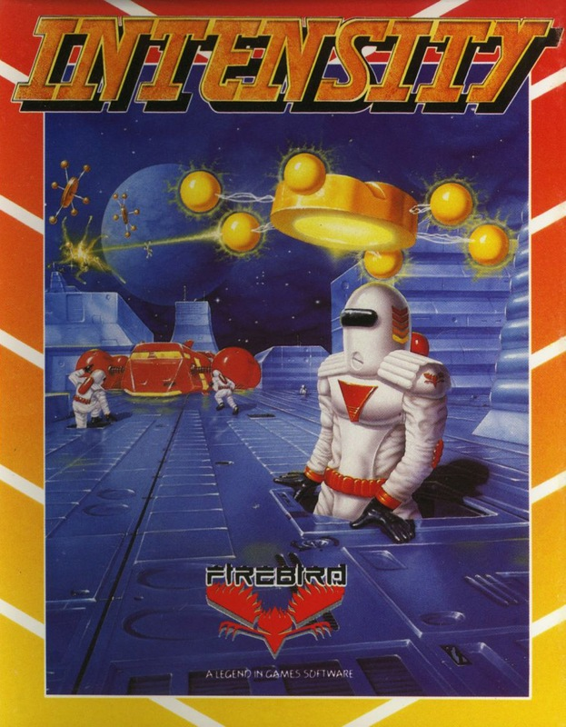
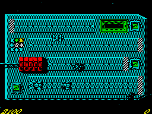

Intensity


{kind=link}

| Publisher: | Firebird |
| Price: | £7.95 cass |
| Year: | 1988 |
| Source: | CRASH, Issue 57 |

Well presented, detailed graphics and animation, excellent sound effects and fun to play. That’s Intensity. What more can I say? (quite a bit if you want to get paid this month — Ed). Oh OK, Intensity is one of those games that’s so simple it’s brilliant.
Perhaps I’d better tell you about it.
Set up to explore new planets for life forms and precious minerals, the Terran (Earth to everyday folk) Exploration Company is under attack by strange hostile aliens. The only course of action is to evacuate the Spaceship Canis Major.

You control a skimmer which hovers around the screen, destroying alien spores by colliding with them. When fire is pressed, the drone craft positioned on the surface of the spaceship flies towards the skimmer’s location — get out of the way or a lethal collision results!
The point of moving the position of the drone is that from time to time, colonists emerge from airlocks, hoping to make it to the drone before they run out of oxygen. However the many different one-screen levels throughout the game are littered with walls and other obstructions which cannot be crossed by the escaping colonists. Some buildings are so tall that even the skimmer cannot fly over them.
Those pesky aliens are pretty harmless in Spore form, but here’s the catch — they mutate! If a Spore finds a suitable landing site it can turn into a Stalker and hop along the surface intent on catching a colonist. Should this happen, a dangerous Nuclon fireball is produced which tracks and collides with the drone, causing much damage. Stalkers may also change into homing Trackers via the intermediate, chrysalis-like Podule stage.
Still with me? — I told you it was simple.
The space station consists of five rows of platforms named after the first five Greek letters (alpha to epsilon for classics students). A letter on the screen exit determines which row you progress to after leaving the current screen. This letter changes depending on how many men have been rescued.
After leaving a screen, you’re presented with a menu of skimmers and drones which can be bought, using resource units collected during play. Three types of skimmer and drone are available. The higher the class, the more damage they can take before exploding. Also, the better skimmers can fly higher and faster — some screens can only be successfully completed with the top-class alpha.
A certain amount of strategy is required to decide which craft to buy, although you can ask the computer for a suggestion, but watch out — it charges one resource unit for this valuable information! The Graftgold team have converted this original concept to the Spectrum in great style. Well-defined (and colourful) graphics grace every level — and the sound’s not bad either. Although puzzling at first, Intensity will have you hooked in no time — a superb, original concept brilliantly executed.
PHIL ... 92%
TERRAN TIPS
- It’s advisable for beginners to practise on the lower two levels (delta and epsilon), as they are easier.
- It’s also advisable to leave the current screen when the ‘exit now’ message appears on screen.
- Try and kill creatures before they transform into their stronger (and deadlier) forms.
- Collect every available RU, as they’re used to buy additional goods.
- After pressing fire, make sure you get out of the moving drone’s path or you’ll collide.
- Destroy the aliens as soon as possible to stop them mutating into more dangerous forms.
- Buy an alpha skimmer for the higher levels, as they contain many high walls which the other skimmers can’t fly over.
Although Intensity is a simple collect-’em-up, it’s nonetheless a very playable one. Keeping one eye on the drone as it collects up the stranded colonists, and the other on the marauding aliens, (who regularly change guises, and so must be watched like a hawk) takes a bit of getting used to. The meanies swarm around the screen causing as much trouble as possible. But you’re brave (or is that foolish), so they don’t worry you. Frazzle their reptilian hides, turn them into charred lumps, be tough, but search out Intensity, because it’s a damned enjoyable game.
MARK ... 91%
As the action hots up it can get very intense (no groans, he means it — Ed). There’s no difference between the 128K and 48K versions that I could see. Even though the tune and FX sound 128Kish they were also found on the 48K machine. Intensity is fast, furious and full of fun, excellent.
NICK ... 90%
THE ESSENTIALS
| Joysticks: | Kempston, Sinclair, Cursor |
| Graphics: | Beautifully detailed and surprisingly colourful graphics viewed from overhead |
| Sound: | Snazzy tunes on the front end of all versions plus some atmospheric in-game FX |
| General rating: | Designed by Andy Braybrook (creator of Uridium among many others), Intensity combines need for both careful thought and frantic action for brilliant effect |
| Presentation: | 87% |
| Graphics: | 88% |
| Playability: | 91% |
| Addictive qualities: | 89% |
| Overall: | 91% |